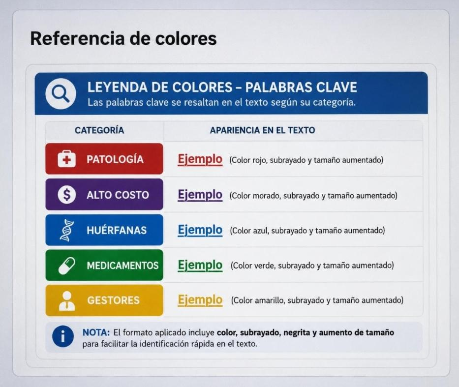

🔍 Analizador de Casos
☰ Configurar palabras
Analizar
Limpiar
Referencia de colores

🔴 Patologías
CÁNCER CANCER LEUCEMIA CÁNCER COLORECTAL CÁNCER DE MAMA CÁNCER DE PRÓSTATA CÁNCER DE PULMÓN CÁNCER DE TRÁQUEA, BRONQUIOS Y PULMÓN CÁNCER DE ÚTERO CÁNCER GÁSTRICO CÁNCER HEPÁTICO O DE HÍGADO LEUCEMIA LINFOIDE AGUDA LEUCEMIA MIELOIDE AGUDA LINFOMA HODGKING LINFOMA NO HODGKING OTROS REINGRESO CIRUGÍA REINGRESO HOSPITALIZACIÓN MORTALIDAD INTRAHOSPITALARIA MORTALIDAD QUIRÚRGICA TBC MALARIA DENGUE DIABETES MEDICIÓN DE FACTORES DE RIESGO OBESIDAD SOBREPESO ENFERMEDAD RENAL CRÓNICA ENFERMEDAD RENAL CRONICA IRC ENFERMEDAD RENAL IRC-ENFERMEDAD RENAL IRC-TRASPLANTE EPOC ENFERMEDAD PULMONAR OBSTRUCTIVA CRÓNICA BRONQUITIS CRÓNICA ENFISEMA EPOC (ENFERMEDAD PULMONAR OBSTRUCTIVA CRÓNICA, BRONQUITIS CRÓNICA O ENFISEMA) NEUMONÍA ACV ACV (ACCIDENTE CEREBRO VASCULAR) ENFERMEDAD CARDIOVASCULAR ENFERMEDAD CARDIOVASCULAR QUE REQUIERA CIRUGÍA SISTEMA NERVIOSO CENTRAL ENFERMEDAD DEL SISTEMA NERVIOSO CENTRAL QUE REQUIERA CIRUGÍA ISQUÉMICA CORONARIA ENFERMEDAD ISQUÉMICA CORONARIA HTA HIPERTENSIÓN ESENCIAL PRIMARIA HIPERTENSIÓN HIPERTENSION HIPERTENSIÓN ARTERIAL HTA (HIPERTENSIÓN ARTERIAL) ICC INSUFICIENCIA CARDIACA ICC (INSUFICIENCIA CARDIACA CONGESTIVA) ATENCIÓN APLICACIÓN BIOLÓGICOS ATENCIÓN ENFERMEDADES INMUNOPREVENIBLES ARTRITIS ARTRITIS REUMATOIDEA PARKINSON SINDROME DE DOWN DOWN AUTISMO ALZHEIMER BURSITIS CAPSULITAS ADHESIVA CERVICOARTROSIS ESPONDILOSIS CERVICAL ESPONDILITIS ANQUILOSANTE ESPONDILITIS FIBROMIALGIA GOTA HERNIA DE DISCO OSTEOARTRITIS OSTEOPOROSIS SACROILEITIS RAQUITISMO TENDINITIS DE HOMBRO TENDINITIS TÚNEL CARPAL TÚNEL CARPIANO TUNEL CARPIANO TÚNEL TARSAL TUNEL TARSAL TUNEL DEL CARPO TÚNEL DEL CARPO NEUROLOGICAS NEUROLÓGICAS EPILEPSIA GRAN QUEMADO EMBARAZO EMBARAZADA GESTACIÓN GESTACION CESAREA ATENCIÓN EN EL EMBARAZO PARTO LACTANCIA MESES DE EDAD 1 AÑOS DE EDAD 1 AÑO 2 AÑOS 3 AÑOS MES DE EDAD 4 AÑOS 5 AÑOS DÍAS DE NACIDO ATENCIÓN EN EL PARTO ATENCIÓN LACTANCIA ATENCIÓN NIÑOS MENORES DE 5 AÑOS ATENCIÓN PREMATUREZ ATENCIÓN RECIÉN NACIDO INDICADORES GLOBALES MATERNO INFANTIL INTERRUPCIÓN VOLUNTARIA DEL EMBARAZO PROBLEMAS RELACIONADOS CON FACILIDADES DE ATENCIÓN MÉDICA U OTROS SERVICIOS DE SALUD REEMPLAZO ARTICULAR REEMPLAZOS ARTICULARES PROSTÉTICOS DE CADERA O DE RODILLA ATENCIÓN PSICOLÓGICA O PSIQUIÁTRICA DE MENORES CON DISCAPACIDAD ATENCIÓN PSICOLÓGICA O PSIQUIÁTRICA DE MENORES VÍCTIMAS DE VIOLENCIA INTRAFAMILIAR ATENCIÓN PSICOLÓGICA Y PSIQUIÁTRICA AMBULATORIA Y CON INTERNACIÓN PARA TODO MENOR DE EDAD CON DIAGNÓSTICO CONFIRMADO O PRESUNTIVO DE ABUSO SEXUAL ATENCIÓN PSICOLÓGICA Y PSIQUIÁTRICA AMBULATORIA Y CON INTERNACIÓN POR ABUSO DE SUSTANCIAS PSICOACTIVAS DEPRESIÓN BIPOLAR ESQUIZOFRENIA TRANSEXUALISMO SUICIDIO SUICIDIOS TRASTORNO MENTAL OTROS TRASTORNOS MENTALES SUICIDIOS Y LESIONES AUTOINFRINGIDAS LESIÓN AUTOINFRINGIDA LESION AUTOINFRINGIDA LESIONES AUTOINFRINGIDAS SALUD ORAL ATENCIÓN ADOLESCENTES SÍFILIS SÍFILIS CONGÉNITA VIH SIDA VIH SIDA COVID COVID -19 CONFIRMADO COVID -19 SOSPECHA COVID -19 HIPERTENSIÓN NEUMONIA DIABETES 1 MES 2 MESES 3 MESES 4 MESES 5 MESES 6 MESES 7 MESES 8 MESES 9 MESES 10 MESES 11 MESES 12 MESES 13 MESES 14 MESES 15 MESES 16 MESES 17 MESES 18 MESES 19 MESES 20 MESES 21 MESES 22 MESES 23 MESES 24 MESES BARIÁTRICA CIRUGÍA BARIÁTRICA BARIATRICA CIRUGIA BARIATRICA CANSER HIPERTENSO HIPERTENSA TUMOR METILCROTONIL SÍNDROME ABSCESOS ACALASIA CONTROL PRENATAL PRENATAL ACCIDENTE MARCADOR MARCADORES TUMORALES TUMORAL TUMORALES MALIGNO INFARTO AGUDO DEL MIOCARDIO INFARTO AGUDO INFARTO MELANOMA ONCOLÓGICA ONCOLOGICA ONCOLÓGICO ONCOLOGICO PSIQUIATRÍA PSIQUIATRIA PSIQUIATRICO PSIQUIÁTRICO PSIQUIATRICA PSIQUIÁTRICA INSUFICIENCIA RENAL IRC INSUFICIENCIA RENAL CRÓNICA INSUFICIENCIA RENAL CRONICA
🟣 Alto costo
UCI CUIDADO INTENSIVO CUIDADO INTENSIVO PARA CUALQUIER PATOLOGÍA DESNUTRICIÓN DESNUTRICION PROTEICOCALORICA QUIMIO QUIMIOTERAPIA HEMODIÁLISIS HEMODIALISIS RADIOTERAPIA IMPLANTE COCLEAR TRANSPLANTE CÓRNEA TRANSPLANTE DE CORAZÓN TRANSPLANTE DE PULMÓN TRANSPLANTE DE CORAZON TRANSPLANTE DE PULMON TRANSPLANTE RENAL EN POLVO FÓRMULA POLIMÉRICA FÓRMULA OLIGOMÉRICA ENFERMEDAD HUÉRFANA GASTROSTOMIA GESTANTE INMUNOSUPRESOR INSULINODEPENDIENTE NEONATO TRASTORNO MENRTAL UCI URGENCIAS TRÁNSITO TRANSITO SOAT ACCIDENTE DE TRÁNSITO ACCIDENTE DE TRANSITO TRASPLANTE DE CADERA TRASPLANTE TRASPLANTADO REEMPLAZO DE CADERA ALIMENTO ALIMENTOS NUTRICION POLVO NUTRICIÓN POLVO POLVO REEMPLAZO ARTICULAR REEMPLAZOS ARTICULARES COCLEAR
🔵 Huérfanas
ACRANIA ACRODERMATITIS ENTEROPÁTICA AGAMMAGLOBULINEMIA MICROCEFALIA CRANEOSINOSTOSIS DERMATITIS SEVERA AGAMMAGLOBULINEMIA AGAMMAGLOBULINEMIA LIGADA A X AGENESIA DE CUERPO CALLOSO LIGADA AL X, CON MUTACIÓN EN EL GEN ALFA 4 AGENESIA PARCIAL DE PÁNCREAS AGENESIA AGENESIA TRAQUEAL AGENESIA TRAQUEAL ALCAPTONURIA AMEBIASIS AMEBIASIS POR AMEBAS SALVAJES ANEMIA DE CUERPOS DE HEINZ ANEMIA DE FANCONI ANEMIA DISERITROPOYÉTICA ANEMIA DISERITROPOYÉTICA, CONGÉNITA ANEMIA HEMOLÍTICA DEBIDO A DÉFICIT DE PIRUVATO QUINASA DE LOS GLÓBULOS ROJOS ANEMIA ANEMIA HEMOLÍTICA POR DÉFICIT DE GLUCOSA FOSFATO ISOMERASA ANGIOEDEMA HEREDITARIO ANGIOMATOSIS CUTÁNEA Y DIGESTIVA ANGIOMATOSIS NEUROCUTÁNEA HEREDITARIA ANGIOMATOSIS QUÍSTICA DE HUESO, DIFUSA ANIRIDIA AGENESIA RENAL RETRASO PSICOMOTOR ANOFTALMIA - INSUFICIENCIA HIPOTÁLAMO-PITUITARIA ANOFTALMIA - MEGALOCÓRNEA - CARDIOPATÍA - ANOMALÍAS ESQUELÉTICAS ANOFTALMIA/MICROFTALMIA - ATRESIA ESOFÁGICA ANOMALÍA ACRO-PECTO-RENAL ANOMALÍA DE DUANE - MIOPATÍA - ESCOLIOSIS ANOMALIA CARDIACA HETEROTAXIA ANOMALÍAS CARDIACAS - HETEROTAXIA ANOMALÍAS DEL ARCO AÓRTICO DISMORFISMO DÉFICIT INTELECTUAL APLASIA CUTIS CONGÉNITA - LINFANGIECTASIA INTESTINAL APLASIA MEDULAR IDIOPÁTICA APNEA DE LA PREMATURIDAD (AOP) ARGININEMIA ARTROGRIPOSIS - DISFUNCIÓN RENAL - COLESTASIS ARTROGRIPOSIS - HIPERQUERATOSIS, FORMA LETAL ARTROGRIPOSIS MÚLTIPLE CONGÉNITA - CARA DE SILBIDO ATIREOSIS ATRESIA BILIAR ATRESIA DE INTESTINO DELGADO ATRESIA TRICÚSPIDE ATROFIA DENTATO-RUBRO-PÁLIDO-LUISIANA BETA-TALASEMIA CALCIFICACIÓN DEL SISTEMA NERVIOSO CENTRAL - SORDERA - ACIDOSIS TUBULAR - ANEMIA CALCIFICACIONES DE PLEXOS COROIDEOS, FORMA INFANTIL CALCIFICACIONES TALÁMICAS SIMÉTRICAS CALCINOSIS BILATERAL ESTRIATO-PÁLIDO-DENTADA CAMPTODACTILIA TAURINÚRIA CARDIOMIOPATÍA - ANOMALÍAS RENALES CARDIOPATÍA CONGÉNITA MIEMBROS CORTOS CARNOSINEMIA CATARATAS ATAXIA SORDERA CATARATAS MIOCARDIOPATÍA CATARATAS NEFROPATÍA ENCEFALOPATÍA CEGUERA CORTICAL RETRASO MENTAL POLIDACTILIA CELÍACA ENFERMEDAD EPILEPSIA CALCIFICACIONES OCCIPITALES CETOACIDOSIS DEBIDA A DÉFICIT DE BETA-CETOTIOLASA CETOACIDOSIS CHEDIAK-HIGASHI, SÍNDROME DE CHEDIAK-HIGASHI CHILD CHILD, SÍNDROME CHRISTIAN DE MYER FRANKEN CHRISTIAN DE MYER FRANKEN, SÍNDROME DE CIRROSIS HEREDITARIA DE LOS NIÑOS INDIOS DE AMÉRICA DEL NORTE CISTINOSIS CITRULINEMIA COARTACIÓN ATÍPICA DE AORTA COLANGITIS ESCLEROSANTE COLESTASIS - RETINOPATÍA PIGMENTARIA - FISURA PALATINA COLITIS EPITELIO-EXFOLIATIVA - SORDERA CONDRODISPLASIA CONDRODISPLASIA - TRASTORNO DEL DESARROLLO SEXUAL CONDRODISPLASIA PUNCTATA LIGADA AL X DOMINANTE CONDRODISPLASIA PUNCTATA, TIPO RIZOMÉLICO CONDRODISPLASIA RECESIVA LETAL CONDRODISPLASIA TIPO BLOMSTRAND CONODISPLASIA CRANEOFACIAL CONVULSIONES HIDROXILSINURIA CONVULSIONES - DÉFICIT INTELECTUAL DEBIDO A HIDROXILSINURIA COOPER-JABS COOPER-JABS, SÍNDROME DE CRÁNEO ECTODÉRMICA CRÁNEO ECTODÉRMICA DISPLASIA CRANEODIAFISARIA CRANEODIAFISARIA, DISPLASIA ARTROPATÍA CRÁNEO-OSTEO-ARTROPATÍA CRANEOSINOSTOSIS CRANEOSINOSTOSIS - ENFERMEDAD CARDIACA CONGÉNITA - DÉFICIT INTELECTUAL CRANEOSINOSTOSIS HIDROCEFALIA MALFORMACIÓN DE CHIARI SINOSTOSIS RADIOULNAR CRANEOSINOSTOSIS ALOPECIA VENTRÍCULO CEREBRAL ANORMAL CRANEOSINOSTOSIS APLASIA DE PERONÉ CRANEOSINOSTOSIS APLASIA RADIAL TIPO IMAIZUMI CRANEOSINOSTOSIS BRAQUIDACTILIA CRANEOSINOSTOSIS CALCIFICACIONES INTRACRANEALES CRANEOSINOSTOSIS TIPO PHILADELPHIA CRANEOSINOSTOSIS, TIPO BOSTON CRANIORRINIA CRANEOSINOSTOSIS - MALFORMACIÓN DE DANDY-WALKER - HIDROCEFALIA DEFICIENCIA DE APRENDIZAJE CRECIMIENTO EXCESIVO - DEFICIENCIA DE APRENDIZAJE CRIOGLOBULINEMIA MIXTA CRIOHIDROCITOSIS HEREDITARIA CON ESTOMATINA REDUCIDA CRISPONI CRISPONI, SÍNDROME DE CURRY JONES CURRY JONES, SÍNDROME DE CUTIS GYRATA ACANTOSIS NIGRICANS CRANEOSINOSTOSIS CUTIS LAXA CUTIS VERTICIS GYRATA - DÉFICIT MENTAL DEFICIENCIA DE DIHIDROLIPOIL DESHIDROGENASA DÉFICIT COMBINADO DE LOS FACTORES V Y VIII DÉFICIT CONGÉNITO DE FIBRINÓGENO DÉFICIT DE ENZIMA RAMIFICANTE DEL GLUCÓGENO DÉFICIT CONGÉNITO DE PROTEÍNA C DÉFICIT CONGÉNITO DE PROTEÍNA S DÉFICIT CONGÉNITO DEL FACTOR X DÉFICIT DE 3-HIDROXI 3-METILGLUTARIL-COA (HMG) SINTETASA DÉFICIT DE 3-HIDROXIACIL-COA DESHIDROGENASA DE ÁCIDOS GRASOS DE CADENA LARGA DÉFICIT DE 5-OXOPROLINASA DÉFICIT DE 6-PIRUVIL-TETRAHIDROPTERINA SINTASA DÉFICIT DE ACONITASA DÉFICIT DE ADENILSUCCINATO LIASA DÉFICIT DE ADENOSINA MONOFOSFATO DEAMINASA DÉFICIT DE ADHESIÓN LEUCOCITARIA DÉFICIT DE ADHESIÓN LEUCOCITARIA TIPO II DÉFICIT DE ADHESIÓN LEUCOCITARIA TIPO III DÉFICIT DE BETA-UREIDOPROPIONASA DÉFICIT DE BIOTINIDASA DÉFICIT DE CARBAMIL-FOSFATO SINTETASA DÉFICIT DE CARNITINA PALMITOILTRANSFERASA II DÉFICIT DE DOPAMINA BETA-HIDROXILASA DÉFICIT CONGÉNITO DE PROTEÍNA C DÉFICIT DE ENZIMA RAMIFICANTE DEL GLUCÓGENO DÉFICIT DE FOSFOENOLPIRUVATO CARBOXIQUINASA DÉFICIT DE FOSFOFRUCTOQUINASA MUSCULAR DÉFICIT DE FOSFOGLICERATO QUINASA DÉFICIT DE GAMMA AMINOBUTÍRICO ÁCIDO TRANSAMINASA DÉFICIT DE GAMMA-GLUTAMIL TRANSPEPTIDASA DÉFICIT DE GAMMA-GLUTAMILCISTEÍNA SINTETASA DÉFICIT DE GLUTATIÓN SINTETASA DÉFICIT DE GTP-CICLOHIDROLASA I DÉFICIT DE GUANIDINOACETATO METILTRANSFERASA DÉFICIT DE LCAT DÉFICIT DE METIL COBALAMINA DE TIPO CBL E DÉFICIT DE METIL COBALAMINA DE TIPO CBL G DÉFICIT DE N5-METILHOMOCISTEÍNA TRANSFERASA DÉFICIT DE N-ACETIL-ALFA-D-GALACTOSAMINIDASA DÉFICIT DE TRANSALDOLASA DÉFICIT DE TRANSPORTADOR DE CREATINA LIGADO AL X DÉFICIT FAMILIAR AISLADO DE GLUCOCORTICOIDES DÉFICIT INTELECTUAL TIPO BIRK-BAREL DÉFICIT INTELECTUAL TIPO KAHRIZI DEGENERACIÓN CORTICO-BASAL DEMENCIA FRONTOTEMPORAL Y PARKINSONISMO LIGADO AL CROMOSOMA 17 DERMATOMIOSITIS DERMOPATÍA RESTRICTIVA LETAL DESBUQUOIS, SÍNDROME DE DESMIELINIZACIÓN CEREBRAL DEBIDO A UN DÉFICIT DE METIONINA ADENOSILTRANSFERASA DESMOSTEROLOSIS DIABETES INSÍPIDA NEFROGÉNICA DIABETES MELLITUS NEONATAL DIABETES MELLITUS, NEONATAL PERMANENTE - AGENESIA PANCREÁTICA Y CEREBELOSA DIABETES, NEONATAL - GRUPO HIPOTIROIDISMO CONGÉNITO - GLAUCOMA CONGÉNITO - FIBROSIS HEPÁTICA - RIÑONES POLIQUÍSTICOS DIABETES-SORDERA DE TRANSMISIÓN MATERNA DIÁFANO-ESPONDILODISOSTOSIS DIARREA CONGÉNITA CON MALABSORCIÓN DEBIDO A INSUFICIENCIA DE CÉLULAS ENTEROENDOCRINAS DIARREA INTRATABLE - ATRESIA COANAL - ANOMALÍAS EN LOS OJOS DIGITO RENO CEREBRAL SÍNDROME DILATACIÓN AÓRTICA - HIPERMOVILIDAD DE LAS ARTICULACIONES - TORTUOSIDAD ARTERIAL DINCSOY SALIH PATEL, SÍNDROME DE DIROFILARIASIS DISAUTONOMÍA FAMILIAR DISECCIÓN ARTERIAL CON LENTIGINOSIS DISFUNCIÓN INMUNE - POLIENDOCRINOPATÍA - ENTEROPATÍA LIGADA A X DISGENESIA CAUDAL FAMILIAR DISGENESIA CEREBRAL CONGÉNITA DEBIDA A DEFICIENCIA DE GLUTAMINA SINTETASA DISGENESIA DEL CUERPO CALLOSO COMPLEJA LIGADA AL X DISOSTOSIS ACROFACIAL TIPO RODRÍGUEZ DISPLASIA CAMPOMÉLICA DISPLASIA ECTODÉRMICA - CON INMUNODÉFICIT ANHIDRÓTICO DISPLASIA ESPONDILOEPIFISARIA CONGÉNITA DISPLASIA ESPONDILOEPIFISARIA TARDÍA DISPLASIA ESPONDILOEPIFISARIA TIPO MACDERMOT DISPLASIA ESPONDILOEPIMETAFISARIA - DENTICIÓN ANORMAL DISPLASIA ESPONDILOEPIMETAFISARIA TIPO BIEGANSKI DISPLASIA ESPONDILO-METAFISARIA DISPLASIA ESPONDILOMETAFISARIA CON INMUNODEFICIENCIA COMBINADA DISPLASIA INMUNO ÓSEA DE SCHIMKE DISPLASIA KNIEST-LIKE LETAL DISPLASIA OTO-ESPONDILO-MEGAEPIFISARIA DISPLASIA PSEUDODIASTRÓFICA DISPLASIA RENAL-HEPÁTICA-PANCREÁTICA - QUISTES DE DANDY-WALKER DISQUERATOSIS CONGÉNITA DISTONÍA 16 DISTONÍA DE TORSIÓN DE APARICIÓN TEMPRANA DISTONÍA DOPA-SENSIBLE DISTONÍA MIOCLÓNICA 15 DISTONÍA-PARKINSONISMO DE INICIO RÁPIDO DISTROFIA AMPOLLOSA HEREDITARIA, TIPO MACULAR DISTROFIA FACIOESCAPULOHUMERAL DISTROFIA MACULAR CISTOIDE DISTROFIA MIOTÓNICA DE STEINERT DISTROFIA MUSCULAR AUTOSÓMICA RECESIVA LIGADA A UNA EPIDERMÓLISIS AMPOLLOSA DISTROFIA MUSCULAR DE DUCHENNE Y BECKER DISTROFIA MUSCULAR DE EMERY DREIFUSS DISTROFIA MUSCULAR OCULOFARÍNGEA DISTROFIA MUSCULAR TIPO DUCHENNE EMBRIOPATÍA POR VIRUS DE LA VARICELA ENCEFALITIS EQUINA ORIENTAL ENCEFALITIS FOCAL DE RASMUSSEN ENCEFALOPATÍA AGUDA NECROSANTE FAMILIAR ENCEFALOPATÍA CON CUERPOS DE INCLUSIÓN DE NEUROSERPINA, FORMA FAMILIAR ENCEFALOPATÍA DEBIDA A DÉFICIT DE GLUT1 ENCEFALOPATÍA DEBIDA A UNA DEFICIENCIA DE PROSAPOSINA ENCEFALOPATÍA DEBIDO A DEFICIENCIA DE UROCANASA ENCEFALOPATÍA DEBIDO A LA HIDROXI-QUINURENINA ENCEFALOPATÍA EPILÉPTICA INFANTIL TEMPRANA ENCEFALOPATÍA GRAVE DE APARICIÓN NEONATAL, AUTOSÓMICA DOMINANTE ENCEFALOPATÍA MIOCLÓNICA TEMPRANA ENCEFALOPATÍA PROVOCADA POR DÉFICIT DE SULFITO OXIDASA ENCEFALOPATÍAS ESPONGIFORMES TRANSMISIBLES (TÉMINO GENÉRICO) ENFERMEDAD AUTOINFLAMATORIA DEBIDO A DEFICIENCIA DE ANTAGONISTA DEL RECEPTOR DE INTERLEUQUINA 1 ENFERMEDAD DE ALEXANDER ENFERMEDAD DE BEHÇET ENFERMEDAD DE BLACKFAN-DIAMOND ENFERMEDAD DE CANAVAN ENFERMEDAD DE CREUTZFELDT-JAKOB ENFERMEDAD DE CUSHING ENFERMEDAD DE DEVIC ENFERMEDAD DE FABRY ENFERMEDAD DE JARABE DE ARCE ENFERMEDAD DE JARABE DE ARCE ENFERMEDAD DE KENNEDY ENFERMEDAD DE KRABBE ENFERMEDAD DE LA ARTERIA CORONARIA - HIPERLIPIDEMIA - HIPERTENSIÓN - DIABETES - OSTEOPOROSIS ENFERMEDAD DE LA MOTONEURONA INFERIOR AUTOSÓMICA RECESIVA DE LA INFANCIA ENFERMEDAD DE LAFORA ENFERMEDAD DE LETTERER-SIWE ENFERMEDAD DE NETHERTON ENFERMEDAD DE PELIZAEUS-MERZBACHER ENFERMEDAD DE REFSUM ENFERMEDAD DE REFSUM, FORMA INFANTIL. ENFERMEDAD DE UNVERRICHT-LUNDBORG ENFERMEDAD DE VON HIPPEL-LINDAU ENFERMEDAD DE VON WILLEBRAND ENFERMEDAD DE WHIPPLE ENFERMEDAD DE WILSON ENFERMEDAD DE WOLMAN ENFERMEDAD DEL RIÑÓN POLIQUÍSTICO AUTOSÓMICA DOMINANTE DE TIPO 1 Y CON ESCLEROSIS TUBEROSA ENFERMEDAD DEL RIÑÓN QUÍSTICO MEDULAR, AUTOSÓMICA RECESIVA ENFERMEDAD GRANULOMATOSA CRÓNICA ENFERMEDAD HEMORRÁGICA DEBIDO A MUTACIÓN PITTSBURGH EN ALFA 1-ANTITRIPSINA ENFERMEDAD MIXTA DEL TEJIDO CONECTIVO ENFERMEDAD POR ALMACENAMIENTO DE ÉSTERES DE COLESTEROL ENFERMEDAD QUÍSTICA MEDULAR AUTOSÓMICA DOMINANTE ENFERMEDAD VENO-OCLUSIVA HEPÁTICA ENFERMEDAD TUBULAR RENAL - CARDIOMIOPATÍA EPIDERMÓLISIS AMPOLLOSA DISTRÓFICA EPIDERMÓLISIS AMPOLLOSA EPIDERMOLÍTICA EPIDERMÓLISIS AMPOLLOSA HEREDITARIA EPIDERMÓLISIS AMPOLLOSA HEREDITARIA EPIDERMÓLISIS AMPOLLOSA JUNTURAL EPILEPSIA CON CRISIS PARCIALES MIGRANTES DEL LACTANTE EPILEPSIA DEMENCIA AMELOGÉNESIS IMPERFECTA EPILEPSIA MIOCLÓNICA DE LA INFANCIA EQUINOCOCOSIS ALVEOLAR ERDHEIM-CHESTER, ENFERMEDAD DE ERITRODERMIA CONGÉNITA ICTIOSIFORME AMPOLLOSA ERITRODERMIA CONGÉNITA LETAL ESCLEROSIS LATERAL AMIOTRÓFICA ESCLEROSIS SISTÉMICA CUTÁNEA DIFUSA ESCLEROSIS TUBEROSA ESTENOSIS PULMONAR VALVULAR EVANS, SÍNDROME DE FIBRODISPLASIA OSIFICANTE PROGRESIVA FIBRODISPLASIA OSIFICANTE PROGRESIVA FIBROSIS PULMONAR - HIPERPLASIA HEPÁTICA - HIPOPLASIA DE MÉDULA ÓSEA FIBROSIS PULMONAR - INMUNODEFICIENCIA - DISGENESIA GONADAL FIBROSIS PULMONAR IDIOPÁTICA FIBROSIS QUÍSTICA FIEBRE REUMÁTICA FÍSTULA ARTERIOVENOSA CEREBRAL FÍSTULA BRONCOBILIAR CONGÉNITA FISURA LABIOPALATINA MALROTACIÓN CARDIOPATÍA FISURA PALATINA CARDIOPATÍA ECTRODACTILIA FISURA PALATINA TALLA BAJA VÉRTEBRAS ANOMALÍAS FOSFORIBOSILPIROFOSFATO SINTETASA, SOBREACTIVIDAD DE FRAGILIDAD ÓSEA CONTRACTURAS ARTICULARES FRIED, SÍNDROME DE FUCOSIDOSIS GALACTOSEMIA GASTROENTERITIS EOSINOFÍLICA GERMAN, SÍNDROME DE GERODERMIA OSTEODISPLÁSTICA GLAUCOMA - APNEA DEL SUEÑO GLOMERULOPATÍA HIPOTRIQUIA TELANGIECTASIAS GLUCOGENOSIS TIPO 2 GLUCOSA-GALACTOSA, MALABSORCIÓN DE GOODPASTURE, SÍNDROME PNEUMO-RENAL DE GRANULOMA CHALAZODÉRMICO GRANULOMATOSIS AUTOINFLAMATORIA INFANTIL GRISCELLI, ENFERMEDAD DE GRUPO ACIDEMIA METILMALÓNICA GRUPO ACIDURIA GRUPO ACIDURIA 3-METILGLUTACÓNICA GRUPO ALTERACIONES ESTRUCTURALES CROMOSÓMICAS GRUPO ATAXIA ESPINOCEREBELOSA GRUPO ATROFIA MUSCULAR ESPINAL GRUPO DELECIONES - DUPLICACIONES CROMOSÓMICAS GRUPO DISTROFIA MUSCULAR CONGÉNITA GRUPO DISTROFIA MUSCULAR DE CINTURAS GRUPO ENANISMO GRUPO ENFERMEDAD MITOCONDRIAL GRUPO GANGLIOSIDOSIS GRUPO GAUCHER GRUPO GLUCOGENOSIS - MIOPATÍA METABÓLICA GRUPO HIPEROXALURIA GRUPO INMUNODEFICIENCIAS PRIMARIAS GRUPO MIOPATÍA CONGÉNITA GRUPO MUCOLIPIDOSIS GRUPO MUCOPOLISACARIDOSIS GRUPO NIEMANN-PICK GRUPO PARÁLISIS PERIÓDICA GRUPO PROGERIA GRUPO SÍNDROME CDG GRUPO SÍNDROME OROFACIODIGITAL GRUPO TAY-SACHS HAMARTOMATOSIS QUÍSTICA DE PULMÓN Y RIÑÓN HARTSFIELD BIXLER DEMYER, SÍNDROME DE HEMOFILIA HEMOGLOBINURIA PAROXÍSTICA NOCTURNA HENNEKAM, SÍNDROME DE HEPATITIS CRÓNICA AUTOINMUNE HERNIA DIAFRAGMÁTICA HIDROCEFALIA NEFROPATÍA ESCLERÓTICAS AZULES HIPERARGININÉMIA HIPEREKPLEXIA - EPILEPSIA HIPERFENILALANINEMIA MATERNA HIPERGLICINEMIA NO CETÓSICA HIPERQUERATOSIS PALMOPLANTAR - CÁNCER DE ESÓFAGO HIPERTENSIÓN ARTERIAL PULMONAR IDIOPÁTICA Y/O FAMILIAR HIPERTERMIA MALIGNA ARTROGRIPOSIS TORTÍCOLIS HIPOPERISTALTISMO INTESTINAL - MICROCOLON - HIDRONEFROSIS HIPOPLASIA PANCREÁTICA DIABETES CARDIOPATÍA HIPOPLASIA TIROIDEA HIRSCHSPRUNG - HIPOPLASIA DE UÑAS - DISMORFIA HIRSCHSPRUNG POLIDACTILIA SORDERA HISTIOCITOSIS DE CÉLULAS DE LANGERHANS HOLOPROSENCEFALIA HOMOCISTINURIA CLÁSICA POR DÉFICIT DE CISTATIONINA BETASINTASA ICF SÍNDROME INCONTINENTIA PIGMENTI INSENSIBILIDAD CONGÉNITA AL DOLOR INSOMNIO FATAL FAMILIAR INTERRUPCIÓN DEL ARCO AÓTICO INTOLERANCIA A LA FRUCTOSA INTOLERANCIA A LA FRUCTOSA ISOTRETINOINA LIKE, SÍNDROME IVIC, SÍNDROME DE 4 FAMILIAS MIOPATÍA CON INCLUSIONES REDUCTORAS JACKSON-WEISS, SÍNDROME DE JEUNE, SÍNDROME DE KALER GARRITY STERN, SÍNDROME DE KALLMANN CARDIOPATÍA, SÍNDROME DE KASABACH-MERRITT, SÍNDROME DE KOZLOWSKI BROWN HARDWICK, SÍNDROME DE LAMINOPATÍA TIPO DECAUDAIN-VIGOUROUX LARSEN LIKE FORMA LETAL, SÍNDROME DE LATOSTEROLOSIS LEPRECHAUNISMO LEPTOSPIROSIS LESIÓN CEREBRAL ISQUÉMICA E HIPÓXICA NEONATAL LESIONES 'DONUT' DE LA CALVARIA - FRAGILIDAD ÓSEA LEUCODISTROFIA - PARAPLEJIA ESPÁSTICA - DISTONÍA LEUCODISTROFIA METACROMÁTICA LEUCODISTROFIA NO ESPECIFICADA LEUCOENCEFALOPATÍA - ATAXIA - HIPODONTIA - HIPOMIELINIZACIÓN LEUCOENCEFALOPATÍA - CONDRODISPLASIA METAFISARIA LEUCOENCEFALOPATÍA - DISTONÍA - NEUROPATÍA MOTORA LEUCOENCEFALOPATÍA ASOCIADA AL TRONCO DEL ENCÉFALO Y A LA MÉDULA ESPINAL - ELEVACIÓN DEL LACTATO LEUCOENCEFALOPATÍA CAVITADA PROGRESIVA LEUCOENCEFALOPATÍA CON QUISTES ANTERIORES Y BILATERALES EN EL LÓBULO TEMPORAL LEUCOENCEFALOPATÍA QUERATOSIS PALMOPLANTAR LEUCOENCEFALOPATÍA QUERATOSIS PALMOPLANTAR LICHTENSTEIN, SÍNDROME DE LINFANGIECTASIAS QUÍSTICAS PULMONARES LINFANGIOLEIOMIOMATOSIS LINFEDEMA - ANOMALÍA ARTERIOVENOSA CEREBRAL LIPODISTROFIA GENERALIZADA ADQUIRIDA LIPODISTROFIA, FAMILIAR PARCIAL, TIPO DUNNIGAN LIPODISTROFIA, TIPO BERARDINELLI LIPOFUSCINOSIS NEURONAL CEROIDE TARDÍA INFANTIL LIPOFUSCINOSIS NEURONAL CEROIDEA JUVENIL LIPOMATOSIS ENCEFALOCRANEOCUTÁNEA LISENCEFALIA DEBIDO A MUTACIONES EN TUBA1A LISENCEFALIA TIPO 2 LISENCEFALIA TIPO III - DISPLASIA ÓSEA METACARPIANA LISENCEFALIA TIPO III - SECUENCIA DE AQUINESIA FETAL FAMILIAR MACROCEFALIA - DEFICIENCIA INMUNITARIA - ANEMIA MACROCEFALIA - MALFORMACIÓN CAPILAR MACROCEFALIA - TALLA BAJA - PARAPLEJIA MACROGIRIA CENTRAL BILATERAL MACROTROMBOCITOPENIA CON FORMACIÓN ANÓMALA DE PROPLAQUETAS, AUTOSÓMICA DOMINANTE MALABSORCIÓN DE FOLATO, HEREDITARIA MALACOPLASIA MALFORMACIÓN CEREBRAL - ENFERMEDAD CARDÍACA CONGÉNITA MALFORMACIÓN DE EBSTEIN MALFORMACIONES DEL DESARROLLO - SORDERA - DISTONÍA MANO HENDIDA URINARIAS ANOMALÍAS ESPINA BÍFIDA ANOMALÍA DE DIAFRAGMA MARSHALL-SMITH, SÍNDROME DE MAZABRAUD, SÍNDROME DE MEGACALICOSIS, CONGÉNITA MEGALENCEFALIA - POLIMICROGIRIA - POLIDACTILIA POSTAXIAL - HIDROCEFALIA MEHMO, SÍNDROME MELORREOSTOSIS MENINGITIS MENINGOCÓCICA METAHEMOGLOBINEMIA HEREDITARIA RECESIVA DE TIPO 2 MIASTENIA GRAVE MICROBRAQUICEFALIA PTOSIS FISURA LABIAL MICROCEFALIA - ANOMALÍAS DIGITALES - DÉFICIT INTELECTUAL MICROCEFALIA - DÉFICIT INTELECTUAL - ANOMALÍAS FALÁNGICAS Y NEUROLÓGICAS MICROCEFALIA - POLIMICROGIRIA- AGENESIA DEL CUERPO CALLOSO MICROCEFALIA BRAQUIDACTILIA CIFOESCOLIOSIS MICROCEFALIA EPILEPSIA RETRASO MENTAL CARDIOPATÍA MICROCEFALIA HIPOPLASIA PONTOCEREBELOSA DISQUINESIA MICROCEFALIA MIOCARDIOPATÍA MICROFTALMIA - ATROFIA CEREBRAL MICROFTALMÍA CON ANOMALÍAS CEREBRALES Y DE LAS MANOS MICROGASTRIA ANOMALÍA DE MIEMBROS MIELOFIBROSIS CON METAPLASIA MIELOCITOIDE MIOCARDIOPATÍA CATARATAS ANOMALÍAS ESPONDILOPÉLVICAS MIOCARDIOPATÍA RESTRICTIVA AISLADA FAMILIAR MIOCLONÍA ATAXIA CEREBELOSA SORDERA MIOCLONÍAS ATROFIA MUSCULAR DISTAL MIOCLONÍA DE ACCIÓN - SÍNDROME DE INSUFICIENCIA RENAL MIOPATÍA CON AUTOFAGIA EXCESIVA MIOPATÍA CONGÉNITA LETAL TIPO COMPTON-NORTH MIOPATÍA DISTAL CON AFECTACIÓN RESPIRATORIA PRECOZ MIOPATÍA DISTAL CON DEBILIDAD DE CUERDAS VOCALES MIOPATÍA HEREDITARIA CON FALLO RESPIRATORIO PRECOZ MIOPATÍA HEREDITARIA DE CUERPOS DE INCLUSIÓN - CONTRACTURAS DE LAS ARTICULACIONES - OFTALMOPLEJÍA MIOPATÍA LIGADA A X CON ATROFIA DEL MÚSCULO POSTURAL MIOPATÍA MIOTÓNICA PROXIMAL MIOPATÍA NEMALÍNICA MIOPATÍA PROVOCADA POR EXCESO DE CALSECUESTRINA Y PROTEÍNA SERCA1 POLIRRADICULONEUROPATÍA DESMIELINIZANTE INFLAMATORIA AGUDA SÍNDROME AREDYLD MIOPATÍA TERMINAL CON AFECTACIÓN DE LA PARTE POSTERIOR DE LAS PIERNAS Y DE LA PARTE ANTERIOR DE EXTREMIDADES SUPERIORES MIOPATÍA TIPO BETHLEM MIOSITIS ESPORÁDICA CON CUERPOS DE INCLUSIÓN MIOSITIS FOCAL MONOSOMÍA 18P MONOSOMÍA 22Q11 MONOSOMÍA DISTAL 10Q MOYA-MOYA, ENFERMEDAD DE MUCOSULFATIDOSIS MUERTE INFANTIL SÚBITA - DISGENESIA DE LOS TESTÍCULOS NAIL PATELLA LIKE ENFERMEDAD RENAL NEFRONOFTISIS FAMILIAR DEL ADULTO CUADRIPARESIA ESPÁSTICA NEFROPATÍA SORDERA HIPERPARATIROIDISMO NEFROSIS - SORDERA - ANOMALÍAS DEL TRACTO URINARIO Y DIGITALES NEU-LAXOVA, SÍNDROME DE NEUMONÍA CAUSADA POR PSEUDOMONAS AERUGINOSA SEROTIPO 01 NEUMOPATÍA AGUDA IDIOPÁTICA EOSINOFÍLICA NEURO MUSCULO ESQUELÉTICO SÍNDROME TIPO CHIPRIOTA NEUROAXONAL DISTROFIA ACIDOSIS TUBULAR NEURODEGENERACIÓN ASOCIADA A PANTOTENATO-QUINASA NEURODEGENERACIÓN CON ACÚMULO CEREBRAL DE HIERRO NEURODEGENERACIÓN DEBIDA A DÉFICIT EN 3-HIDROXISOBUTIRIL-COA-HIDROLASA NEURODEGENERATIVO LIGADO AL X, DE TIPO BERTINI, SÍNDROME NEURODEGERATIVO LIGADO AL X, DE TIPO HAMEL, SÍNDROME NEUROPATÍA MOTRIZ MULTIFOCAL CON BLOQUEO DE CONDUCCIÓN NEUTROPENIA CONGÉNITA GRAVE NEUTROPENIA CONGÉNITA GRAVE, AUTOSÓMICA Y DOMINANTE NEUTROPENIA, CONGÉNITA GRAVE, LIGADA AL X ODONTOLEUCODISTROFIA OSTEOCONDROMAS MÚLTIPLES OSTEODISPLASIA POLIQUÍSTICA LIPOMEMBRANOSA CON LEUDOENCEFALOPATÍA ESCLEROSANTE OSTEODISTROFIA HEREDITARIA DE ALBRIGHT OSTEOGÉNESIS IMPERFECTA OSTEOGÉNESIS IMPERFECTA - RETINOPATÍA - CONVULSIONES - DÉFICIT INTELECTUAL OSTEOGÉNESIS IMPERFECTA MICROCEFALIA CATARATAS OSTEOMIELITIS MULTIFOCAL CRÓNICA RECURRENTE JUVENIL OSTEOPETROSIS - HIPOGAMMAGLOBULINEMIA OSTEOPETROSIS DE ALBERS-SCHÖNBERG OSTEOPETROSIS DOMINANTE DE TIPO 1 OSTEOPETROSIS MALIGNA AUTOSÓMICA RECESIVA OSTEOPETROSIS, AUTOSÓMICA RECESIVA LEVE, FORMA INTERMEDIA OTROS OTROS PROBLEMAS GENÉTICOS PANCREATITIS AGUDA RECURRENTE PANCREATITIS CRÓNICA HEREDITARIA PAQUIDERMOPERIOSTOSIS PARÁLISIS BULBAR PROGRESIVA DE LA NIÑEZ PARÁLISIS SUPRANUCLEAR PROGRESIVA - SÍNDROME CORTICOBASAL PÉNFIGO VULGAR PENFIGOIDE BULLOSO PERIARTERITIS NODOSA PERLMAN, SÍNDROME DE PICNODISOSTOSIS POIQUILODERMIA DE KINDLER POLICONDRITIS ATROFIANTE POLINEUROPATÍA AMILOIDE FAMILIAR POLIPOSIS JUVENIL DE LA INFANCIA POLISINDACTILIA - MALFORMACIÓN CARDÍACA PROBLEMAS RELACIONADOS CON FACTORES DE LA COAGULACIÓN PROTOPORFIRIA ERITROPOYÉTICA PSEUDOHIPOALDOSTERONISMO TIPO 1 PSEUDOPROGERIA PSEUDOTUMOR INFLAMATORIO DEL HÍGADO PTERIGIUM , FORMAS LETALES DEL SÍNDROME DE QAZI MARKOUIZOS, SÍNDROME DE QUERATODERMA PALMOPLANTAR DIFUSO - ACROCIANOSIS QUERATOSIS FOLICULAR ENANISMO ATROFIA CEREBRAL QUINTOS METACARPIANOS CORTOS - RESISTENCIA A LA INSULINA RAMBAUD GALLIAN TOUCHARD, SÍNDROME DE RESISTENCIA PERIFÉRICA A LAS HORMONAS TIROIDEAS RETRASO DEL DESARROLLO DEBIDO AL DÉFICIT DE 2-METILBUTIRIL-COA-DESHIDROGENASA RETRASO EN EL DESARROLLO - SORDERA, TIPO HILDEBRAND RETRASO MENTAL - CATARATAS - CIFOSIS RETRASO MENTAL HIPOTRIQUIA BRAQUIDACTILIA RETRASO MENTAL LIGADO A X - MALFORMACIÓN DE DANDY WALKER - ENFERMEDAD DE LOS GANGLIOS BASALES - CONVULSIONES RETRASO MENTAL LIGADO AL X - ACROMEGALIA - HIPERACTIVIDAD RETRASO MENTAL LIGADO AL X - CUBITUS VALGUS - ROSTRO TÍPICO RETRASO MENTAL LIGADO AL X - EPILEPSIA - CONTRACTURAS PROGRESIVAS DE LAS ARTICULACIONES - ROSTRO TÍPICO RETRASO MENTAL LIGADO AL X - HIPOGAMMAGLOBULINEMIA - DETERIORO NEUROLÓGICO PROGRESIVO RETRASO MENTAL LIGADO AL X - HIPOTONÍA - DISMORFISMO FACIAL - COMPORTAMIENTO AGRESIVO RETRASO MENTAL LIGADO AL X PSICOSIS MACROORQUIDISMO RETRASO MENTAL LIGADO AL X, DE TIPO ARMFIELD RETRASO MENTAL LIGADO AL X, DE TIPO MILES-CARPENTER RETRASO MENTAL LIGADO AL X, DE TIPO REISH RETRASO MENTAL LIGADO AL X, DE TIPO SEEMANOVA RETRASO MENTAL LIGADO AL X, DE TIPO SHRIMPTON RETRASO MENTAL LIGADO AL X, DE TIPO STEVENSON RETRASO MENTAL LIGADO AL X, DE TIPO STOLL RETRASO MENTAL LIGADO AL X, DE TIPO VITALE RETRASO MENTAL LIGADO AL X, DE TIPO WITTWER RETRASO MENTAL LIGADO AL X, SINDRÓMICO 7 RETRASO MENTAL SEVERO - EPILEPSIA - ANOMALÍAS ANALES -HIPOPLASIA DE LAS FALANGES DISTALES RETRASO MENTAL SEVERO LIGADO AL X TIPO GUSTAVSON RETRASO MENTAL Y DEL CRECIMIENTO - DISOSTOSIS MANDIBULO FACIAL - MICROCEFALIA - FISURA PALATINA RETRASO PSICOMOTOR PROVOCADO POR DÉFICIT DE S-ADENOSIL HOMOCISTEÍNA HIDROLASA ROMBOENCEFALOSINAPSIS SAKATI NYHAN, SÍNDROME DE SARCOIDOSIS SCARF, SÍNDROME DE SCHINZEL-GIEDION, SÍNDROME DE SECRECIÓN INAPROPIADA DE HORMONA ANTIDIURÉTICA, SÍNDROME DE SIEGLER BREWER CAREY, SÍNDROME DE SIMPSON-GOLABI-BEHMEL TIPO 2, SÍNDROME DE SÍNDROME 3M SÍNDROME ACROCALLOSO SÍNDROME ACRORENAL RECESIVO SÍNDROME ACRORENOMANDIBULAR SÍNDROME ALPORT - LEIOMIOMATOSIS DIFUSA LIGADA AL X SÍNDROME ANTTLEY-BIXLER-LIKE, GENITALES AMBIGUOS, ALTERACIÓN DE LA ESTEROIDOGÉNESIS SÍNDROME BOHRING-OPITZ SÍNDROME CACH SÍNDROME CADASIL SÍNDROME CAMOS SÍNDROME CEDNIK SÍNDROME CEREBRO COSTO MANDIBULAR SÍNDROME CEREBRO-ÓCULO-NASAL SÍNDROME CEREBRO-PULMÓN-TIROIDES SÍNDROME CHARGE SÍNDROME CINCA SÍNDROME CODAS SÍNDROME COFS SÍNDROME CREST SÍNDROME DE AICARDI-GOUTIERES SÍNDROME DE ALAGILLE SÍNDROME DE ALLAN-HERNDON-DUDLEY SÍNDROME DE ALPERS SÍNDROME DE ALPORT SÍNDROME DE ALSTROM SÍNDROME DE EHLERS-DANLOS DE TIPO VASCULAR SÍNDROME DE ANEUPLOIDÍA EN MOSAICO VARIEGADA SÍNDROME DE ANEURISMA AÓRTICO DE TIPO LOEYS-DIETZ SÍNDROME DE ANOFTALMÍA PLUS SÍNDROME DE ANTISINTETASAS SÍNDROME DE ANTLEY-BIXLER SÍNDROME DE ATAXIA - SORDERA - RETRASO MENTAL SÍNDROME DE BAMFORTH SÍNDROME DE BANGSTAD SÍNDROME DE BARAITSER BRETT PIESOWICZ SÍNDROME DE BARDET-BIEDL SÍNDROME DE BARTH SÍNDROME DE BARTSOCAS-PAPAS SÍNDROME DE BARTTER SÍNDROME DE BASAN SÍNDROME DE BAZEX SÍNDROME DE BAZEX-DUPRE-CHRISTOL SÍNDROME DE BECKWITH-WIEDEMANN SÍNDROME DE BEEMER ERTBRUGGEN SÍNDROME DE BERANT SÍNDROME DE BERNARD-SOULIER SÍNDROME DE BIRT-HOGG-DUBÉ SÍNDROME DE BLOOM SÍNDROME DE BONNEMAN-MEINECKE-REICH SÍNDROME DE BORRONE DI ROCCO CROVATO SÍNDROME DE BOSLEY-SALIH-ALOAINY SÍNDROME DE BOWEN-CONRADI SÍNDROME DE BROWN-VIALETTO-VAN LAERE SÍNDROME DE BUDD-CHIARI SÍNDROME DE CABEZAS SÍNDROME DE CANTRELL HALLER RAVITSCH SÍNDROME DE CAREY-FINEMAN-ZITER SÍNDROME DE CARNEVALE SÍNDROME DE CATARATAS CONGÉNITAS, DISMORFIA FACIAL, Y NEUROPATÍA (CCFDN) SÍNDROME DE CEFALOPOLISINDACTILIA DE GREIG SÍNDROME DE CHRIST-SIEMENS-TOURAINE SÍNDROME DE CHURG-STRAUSS SÍNDROME DE COCKAYNE SÍNDROME DE COFFIN-LOWRY SÍNDROME DE COHEN SÍNDROME DE COLE-CARPENTER SÍNDROME DE CORNELIA DE LANGE SÍNDROME DE COSTELLO SÍNDROME DE COWDEN SÍNDROME DE CRIGLER-NAJJAR SÍNDROME DE DENYS-DRASH SÍNDROME DE DURSUN SÍNDROME DE DYGGVE-MELCHIOR-CLAUSEN SÍNDROME DE ANEUPLOIDÍA EN MOSAICO VARIEGADA SÍNDROME DE EHLERS-DANLOS DE TIPO VASCULAR SÍNDROME DE EIKEN SÍNDROME DE ENCEFALOPATÍA MIONEUROGASTROINTESTINAL SÍNDROME DE EXTRAVASACIÓN CAPILAR SÍNDROME DE FANCONI ASOCIADO A CADENAS LIGERAS IG MONOCLONAL SÍNDROME DE FOUNTAIN SÍNDROME DE FRASER SÍNDROME DE FREEMAN-SHELDON SÍNDROME DE GALLOWAY SÍNDROME DE GORLIN SÍNDROME DE GRANGE SÍNDROME DE GUILLAIN-BARRÉ SÍNDROME DE HARTNUP SÍNDROME DE HERMANSKY-PUDLAK SÍNDROME DE HIPERCOAGULABILIDAD POR DÉFICIT DE GLICOSILFOSFATIDILINOSITOL SÍNDROME DE HIPER-IGE AUTOSÓMICO DOMINANTE SÍNDROME DE HOLT-ORAM SÍNDROME DE HURLER SÍNDROME DE INTESTINO CORTO SÍNDROME DE JACOBSEN SÍNDROME DE JOUBERT SÍNDROME DE JOUBERT CON DEFECTO HEPÁTICO SÍNDROME DE JOUBERT CON DEFECTO OROFACIODIGITAL SÍNDROME DE KAPUR-TORIELLO SÍNDROME DE KEARNS-SAYRE SÍNDROME DE LA PIEL RIZADA SÍNDROME DE LA TRIPLE H (HHH) SÍNDROME DE LARSEN SÍNDROME DE LEIGH SÍNDROME DE LENNOX-GASTAUT SÍNDROME DE LESCH-NYHAN SÍNDROME DE LEWIS-SUMMER SÍNDROME DE LIDDLE SÍNDROME DE LI-FRAUMENI SÍNDROME DE MAFFUCCI SÍNDROME DE MARSHALL CON FIEBRE PERIÓDICA SÍNDROME DE MATTHEW-WOOD SÍNDROME DE MCCUNE-ALBRIGHT SÍNDROME DE MICHELS SÍNDROME DE MICROLISENCEFALIA - MICROMELIA SÍNDROME DE MILLER DIEKER SÍNDROME DE MOWAT-WILSON SÍNDROME DE MUIR-TORRE SÍNDROME DE PERRY SÍNDROME DE PFEIFFER SÍNDROME DE PROTEUS SÍNDROME DE PSEUDO-ZELLWEGER SÍNDROME DE RETT SÍNDROME DE RETT ATÍPICO SÍNDROME DE ROBERTS SÍNDROME DE ROTURA DE NIJMEGEN SÍNDROME DE RUBÉOLA CONGÉNITA SÍNDROME DE SERKAL SÍNDROME DE SEZARY SÍNDROME DE SHWACHMAN-DIAMOND SÍNDROME DE SJÖGREN-LARSSON SÍNDROME DE SMITH-LEMLI-OPITZ SÍNDROME DE STORMORKEN SJAASTAD LANGSLET SÍNDROME DE ULBRIGHT-HODES SÍNDROME DE VATER-LIKE, CON HIPERTENSIÓN PULMONAR, ANOMALÍAS DE LAS OREJAS Y RETRASO DEL CRECIMIENTO SÍNDROME DE VICI SÍNDROME DE WAARDENBURG-SHAH SÍNDROME DE WALKER-WARBURG SÍNDROME DE WERNER SÍNDROME DE WIEACKER-WOLFF SÍNDROME DE WISKOTT-ALDRICH SÍNDROME DE WOLFRAM SÍNDROME DE ZELLWEGER SÍNDROME DE ZOLLINGER-ELLISON SÍNDROME DEL CRÁNEO EN TRÉBOL AISLADO SÍNDROME DEL INJERTO CONTRA HUÉSPED SÍNDROME DISGENÉSICO DEL TRONCO ENCEFÁLICO DE ATHABASKAN SÍNDROME HYDROLETHALUS SÍNDROME IRIDA SÍNDROME KID SÍNDROME LEOPARD SÍNDROME LINFOPROLIFERATIVO AUTOINMUNE SÍNDROME MELAS SÍNDROME MERRF SÍNDROME MIASTÉNICO DE LAMBERT-EATON SÍNDROME N SÍNDROME ÓCULO-CEREBRO-RENAL SÍNDROME PHACE SÍNDROMES HIPEREOSINOFÍLICOS SÍNDROMES MIASTÉNICOS CONGÉNITOS SÍNTESIS DE ÁCIDOS BILIARES, ENFERMEDAD DE SIRENOMELIA SIRINGOMIELIA SITOSTEROLEMIA SORDERA VÁLVULA MITRAL ESQUELÉTICAS ANOMALÍAS SORDERA VÁLVULA MITRAL ESQUELÉTICAS ANOMALÍAS SUCCINIL-COA ACETOACETATO TRANSFERASA, DÉFICIT DE TAKAYASU ENFERMEDAD DE TIRO CEREBRO RENAL SÍNDROME TIROSINEMIA TIPO 1 TIROSINEMIA TIPO 2 TORIELLO LACASSIE DROSTE, SÍNDROME DE TOWNES-BROCKS, SÍNDROME DE TRASTORNO DEL DESARROLLO SEXUAL 46 XY, INSUFICIENCIA ADRENAL TRASTORNO DEL DOLOR EXTREMO PAROXÍSTICO TRASTORNO INMUNONEUROLÓGICO LIGADO AL X TRASTORNO NEUROMETABÓLICO POR DEFICIENCIA DE SERINA TRÍADA DE CURRARINO TRIOSA FOSFATO-ISOMERASA, DÉFICIT DE UROLITIASIS 2,8 DIHIDROXI-ADENINA VARIANTE NEUROLÓGICA DEL SÍNDROME DE WAARDENBURG-SHAH VASCULITIS VASCULOPATÍA CEREBRORRETINIANA W SÍNDROME WALDENSTRÖM, MACROGLOBULINEMIA DE WALDENSTRÖM, MACROGLOBULINEMIA DE XANTINURIA, HEREDITARIA AISLADA XANTOMATOSIS CEREBROTENDINOSA XK APROSENCEFALIA ZUNICH-KAYE, SÍNDROME DE ENFERMEDAD DE NIEMANN-PICK TIPO A/ B SÍNDROME DE GLASS (SÍNDROME ASOCIADO AL GEN SATB2 SÍNDROME DE JARCHO LEVIN DISPLASIA CLEIDOCRANEAL (DCC) OSTEOMALACIA INDUCIDA POR TUMOR AMILOIDOSIS DE CADENAS LIGERAS HIPERTERMIA MALIGNA DEBIDA A LA ANESTESIA AUSENCIA, ATRESIA Y ESTENOSIS CONGÉNITA DEL ANO, SÍNDROME DE MENKE-HENNEKAM TRASTORNO DEL NEURODESARROLLO RELACIONADO A PPP2R SÍNDROME DE DIETS-JONGMANS GLUCOGENOSIS TIPO XIII (GSD XIII) GLUCOGENOSIS TIPO IX LINFOHISTIOCITOSIS HEMOFAGOCÍTICA FAMILIAR (FHL) NEFROPATÍA POR IGA GLUCOGENOSIS TIPO III (GSD III) AUSENCIA, ATRESIA Y ESTENOSIS CONGÉNITA DEL ANO, AUSENCIA, ATRESIA Y ESTENOSIS CONGÉNITA DE OTRAS PEO-MIOPATÍA-EMACIACIÓN DISTONÍAS RELACIONADAS A KMT2B AMILOIDOSIS POR TRANSTIRETINA_ ATTRWT COLESTASIS INTRAHEPÁTICA FAMILIAR PROGRESIVA CHARCOT-MARIE-TOOTH SÍNDROME DE INTESTINO CORTO (ADQUIRIDO) TROMBASTENIA DE GLANZMANN HEMOFILIA HEMOFILIA A ADQUIRIDA GLAUCOMA ACATALASEMIA ACERULOPLASMINEMIA ACIDEMIA ACIDOSIS ACIDURIA ACONDROGENESIS ACONDROPLASIA ACORTAMIENTO ACRANIA ACROCEFALOSINDACTILIA ACROCRANEOFACIAL ACRODERMATITIS ACROESQUIFODISPLASIA ACROMATOPSIA ACROMEGALIA ACROMEGALOIDE ACROMELANOSIS ACROOSTEOLISIS ADAMANTINOMA ADRENOLEUCODISTROFIA AFALANGIA AFASIA AGAMAGLOBULINEMIA AGAMMAGLOBULINEMIA AGENESIA AGLOSIA AGNATIA ALBINISMO ALCAPTONURIA ALFA ALFA-MANOSIDOSIS ALPS-CASP10 ALPS-FASLG AMAUROSIS AMEBIASIS AMILOIDOSIS AMIOPLASIA ANADISPLASIA ANALBUMINEMIA ANEMIA ANENCEFALIA/EXENCEFALIA ANESTESIA ANGIOEDEMA ANGIOMA ANGIOMATOSIS ANIRIDIA ANIRIDIA ANISAKIASIS ANOFTALMIA ANOMALÍA ANOMALÍAS ANONIQUIA ANOSMIA ANQUILOBLEFARON ANQUILOSIS APECED APLASIA APRAXIA AQUEIROPODIA ARACNODACTILIA ARAÑAZO AR-DKC ARGININEMIA AR-HIES ARRINIA ARTERIRIS ARTERITIS ARTRITIS ARTROGRIPOSIS ASOCIACIÓN ASPLENIA ATAXIA ATAXIA ATELOSTEOGENESIS ATERIOPATIA ATEROESCLEROSIS- ATIREOSIS ATRANSFERRINEMIA ATRESIA ATROFIA ATROFODERMA AURICULO-OSTEO-DISPLASIA AUTISMO BANDAS BETA-MANOSIDOSIS BETA-TALASEMIA BLEFAROCHALASIA BLEFAROFIMOSIS BLEFAROPTOSIS BRADIOPSIA BRAQUICEFALIA BRAQUIDACTILIA BRAQUITELEFALANGIA CALCIFICACIÓN CALCIFICACIONES CALCINOSIS CAMPOMELIA CAMPTOBRAQUIDACTILIA CAMPTODACTILIA CANDIDIASIS CANDLE CARD11 CARDIOMIOPATÍA CARDIOPATÍA CARNOSINEMIA CATARATAS CATARATAS-GLAUCOMA CEGUERA CELIACA CETOACIDOSIS COLANGITIS CIRROSIS CISTATIONINURIA CISTINOSIS CISTINURIA CITRULINEMIA COARTACION COLESTASIS COLITIS COLOBOMA COMPLEJO COMUNICACION CONDRODISPLASIA CONJUNTIVITIS CONODISPLASIA CONTRACTURAS CONVULSIONES CORDOMA COROIDEA COROIDEREMIA CRANEORAQUISQUISIS CRANEOSINOSTOSIS CRANIORRINIA CRANIOSINOSTOSIS CRECIMIENTO CRIOGLOBULINEMIA CRIOHIDROCITOSIS CRIPTOMICROTIA CROMOSOMA DACRIOCISTITIS DANDY DEFECTO DEFECTOS DEFICIENCIA DEFICIENCIAS DÉFICIT DEGENERACION DELECION DEMENCIA DENTINOGENESIS DERIVADOS DERMATITIS DERMATO DERMATOLEUCODISTROFIA DERMATOMIOSITIS DERMATOSIS DERMO DERMOIDE DERMOPATIA DESMIELINIZACION DESMOSTEROLOSIS DESORDEN DESORDENES DESPIGMENTACION DESPRENDIMIENTO DIABETES DIAFANO-ESPONDILODISOSTOSIS DIARREA DIATESIS DIHIDROPIRIMIDINURIA DILATACIÓN DIRA DIROFILARIASIS DISAUTONOMIA DISCONDROSTEOSIS DISECCIÓN DISFASIA DISFUNCIÓN DISGENESIA DISINOSTOSIS DISMORFIA DISMORFISMO DISOSTOSIS DISPLASIA DISQUERATOSIS DISQUINESIA DISTONIA DISTONIA-PARKINSONISMO DISTONIAS DISTROFIA DITRA DREPANOCITOSIS DUPLICACIÓN ECTOPIA ECTRODACTILIA EMBRIOPATÍA ENANISMO ENCEFALITIS ENCEFALOMIOPATÍA ENCEFALOPATÍA ENCEFALOPATÍA ENCEFALOPATÍAS ENCONDROMATOSIS ENFERMEDAD NEUROMIELITIS TELANGIESTASIA ENFERMEDADES ENFISEMA EPIDERMODISPLASIA EPIDERMOLISIS EPILEPSIA ERITERMALGIA ERITRODERMIA ERITROQUERATODERMIA ERLIQUIOSIS ESCAFOCEFALIA ESCLEROSIS ESFEROCITOSIS ESPASTICIDAD ESPINO ESPONDYLOENCHONDRO-DISPLASIA ESQUISENCEFALIA ESQUIZOFRENIA ESTATURA ESTENOSIS ESTEROIDE ESTESIONEUROBLASTOMA ESTOMATOCITOSIS FASCITIS FENILCETONURIA FEOCROMOCITOMA FIBROCONDROGENESIS FIBRODISPLASIA FIBROFOLICULOMAS FIBROMATOSIS FIBROSIS FIEBRE FISTULA FISURA FORAMINA FORMA FORMAS FOSFORIBOSILPIROFOSFATO FOTOSENSIBILIDAD FRAGILIDAD FRUCTOSURIA FUCOSIDOSIS GALACTOSEMIA GANGLIOSIDOSIS GASTROENTERITIS GASTROSQUISIS GERODERMIA GIGANTISMO GLAUCOMA GLOMERULOPATÍA GLUCOGENOSIS GRANULOMA GRANULOMATOSIS HAMARTOMATOSIS HEMANGIOMATOSIS HEMATURIA HEMICRANIA HEMIMELIA HEMIPLEJIA HEMOCROMATOSIS HEMOGLOBINURIA HENDIDURA HEPATITIS HERMAFRODITISMO HERNIA HETEROTAXIA HIDROCEFALIA HIPERANDROGENISMO HIPERARGININEMIA HIPERCOLESTEROLEMIA HIPEREKPLEXIA HIPERFENILALALINEMIA HIPERFENILALANINEMIA HIPERFERRITINEMIA HIPERGLICINEMIA HIPERINMUNOGLOBULINEMIA HIPERLIPOPROTEINEMIA HIPEROSTOSIS HIPEROXALURIA HIPERPLASIA HIPERQUERATOSIS HIPERSOMNIA HIPERTELORISMO HIPERTERMIA HIPERTRICOSIS HIPO HIPOCONDROPLASIA HIPOFOSFATASIA HIPOGAMAGLOBULINEMIA HIPOGLUCEMIA HIPOGONADISMO HIPOMAGNESEMIA HIPOMIELINIZACIÓN HIPOPARATIROIDISMO HIPOPERISTALTISMO HIPOPITUITARISMO HIPOPLASIA HIPOQUERATOSIS HIPOSPADIAS HIPOTERMIA HIPOTONIA HIPOTRICOSIS HIRSCHSPRUNG HISTIDINEMIA HISTIOCITOSIS HOLOPROSENCEFALIA HOMOCARNOSINOSIS HOMOCISTINURIA ICTIOSIS IMINOGLICINURIA INCONTINENTIA INMUNODEFICIENCIA INSENSIBILIDAD INSOMNIO INTERRUPCIÓN INTOLERANCIA IPEX IRAK4 KERATOSIS LAMINOPATIA LATOSTEROLOSIS LEIOMIOMA LEPRECHAUNISMO LEUCODISTROFIA LEUCOENCEFALOPATÍA LEUCONIQUIA LINFANGIECTASIAS LINFANGIOLEIOMIOMATOSIS LINFEDEMA LIPODISTROFIA LIPODISTROFIA LIPOFUSCINOSIS LIPOMA LIPOMATOSIS LIPOPROTEINOSIS LISENCEFALIA LOBULOS MACROCEFALIA MACROGIRIA MACROGLOBULINEMIA MACROSTOMIA MACROTROMBOCITOPENIA MALABSORCIÓN MALACOPLASIA MALFORMACIÓN MALFORMACIONES MASTOCITOSIS MEGACALICOSIS MEGALENCEFALIA MELORREOSTOSIS METACONDROMATOSIS METAHEMOGLOBINEMIA MIASTENIA MICROBRAQUICEFALIA MICROCEFALIA MICRODELECION MICROFTALMIA MICROGASTRIA MICROTIA MIELODISPLASIA MIELOFIBROSIS MIGRAÑA MIOCARDIOPATÍA MIOCLONIA MIOCLONO MIOFASCITIS MIOPATÍA MIOSITIS MONOSOMÍA MSMD MUCOLIPIDOSIS MUCOPOLISACARIDOSIS MUCOSULFATIDOSIS MUERTE MUTACIÓN MUTACIÓN NEFRONOFTISIS NEFROPATÍA NEFROSIS NEUMOPATÍA NEURO NEUROAXONAL NEURODEGENERACION NEUROFIBROMATOSIS NEUROPATIA NEUROPATÍA NEUROPATÍA NEUTROPENIA NEUTROPENIA NEVUS NOMID OBESIDAD OCULO ODONTO ODONTODISPLASIA ODONTOLEUCODISTROFIA OLIGODONCIA OMODISPLASIA ONFALOCELE ONICOTRICODISPLASIA OPSISMODISPLASIA OSPTEODISPLASTIA OSTEOCONDRODISPLASIA OSTEOCONDROMAS OSTEOCONDROMATOSIS OSTEOCRANEOESTENOSIS OSTEODISPLASIA OSTEODISTROFIA OSTEOGENESIS OSTEOLISIS OSTEOMIELITIS OSTEOPATÍA OSTEOPETROSIS OSTEOPETROSIS OSTEOPOROSIS OSTEOSCLEROSIS OTO OTRAS OTROS OVARIOS PANCREATITIS PANCREATOBLASTOMA PANENCEFALITIS PANICULITIS PAPULOSIS PAQUIDERMOPERIOSTOSIS PAQUIONIQUIA PARÁLISIS PARAPLEJIA PARAPLEJIA-BRAQUIDACTILIA-EPIFISIS PARAPLEJIA-RETRASO PARESIA PELO PÉNFIGO PENFIGOIDE PÉRDIDA PERIARTERITIS PERICARDITIS PERIODONTITIS PI3KΔ PICNOACONDROGENESIS PICNODISOSTOSIS PIEBALDISMO PITYRIASIS PLAGIOCEFALIA PLAID PLAQUETARIO PNEUMONIA POIQUILODERMIA POLIARTRITIS POLICONDRITIS POLIDACTILIA POLINEUROPATIA POLIPOSIS POLIQUISTOSIS POLIRRADICULONEUROPATIA POLISINDACTILIA PORFIRIA POROQUERATOSIS PREDISPOSICION PROBLEMAS PROGERIA PROTEINOSIS PROTOPORFIRIA PSEUDOACONDROPLASIA PSEUDOARTROSIS PSEUDOHIPOALDOSTERONISMO PSEUDOMIXOMA PSEUDOPROGERIA PSEUDOTUMOR PSEUDOXANTOMA PTERYGIUM PTOSIS PULGAR PULGARES PURPURA QUADRIPARESIA QUERATITIS QUERATOCONJUNTIVITIS QUERATODERMA QUERATODERMIA QUERATOSIS QUERUBISMO QUINTOS RECEPTOR RESISTENCIA RETICULOHISTIOCITOSIS RETINITIS RETINO RETINOPATÍA RETINOSQUISIS RETRASO RNASEH2A RNASEH2B RNASEH2C ROMBOENCEFALOSINAPSIS SARCOIDOSIS SARCOSINEMIA SCN2 SCN3 SCN4 SIALIDOSIS SINDACTILIA SÍNDROMES SINESPONDILISMO SINFALANGISMO SINGNATIA SINOSTOSIS SIRENOMELIA SIRINGOMIELIA SITOSTEROLEMIA SORDERA SPG27 TALLA TAQUIARRITMIA TAQUICARDIA TELANGIECTASIA TETRAPLEJIA TIMOMA TIRO TIROSINEMIA TNF TORACO TORTICOLIS TORTUOSIDAD TRAQUEOBRONCOMEGALIA TRASTORNO TRASTORNOS TRIADA TRICODISPLASIA TRICOMEGALIA TRICROMASIA TRIGONOCEFALIA TRIOSA TRISOMIA TRITANOPIA TROMBOCITOPENIA ULCERACION UROLITIASIS URTICARIA ÚTERO VACTERL VARIANTE VASCULITIS VASCULOPATIA XANTINURIA XANTOMATOSIS XERODERMA XERODERMIA XK XL-DKC GALACTOSIALIDOSIS HIPERTENSIÓN KILLIAN OBSTRUCCIÓN POLIMIOSITIS RAQUITISMO RETINOSIS PANHIPOPITUITARISMO MICRODELECIÓN TROMBOPATÍA: NEOPLASIA DISCAPACIDAD NEURODEGENERACIÓN PARAMIOTONÍA MIELITIS LEUCOENCEFALITIS COREOACANTOCITOSIS MIOTONÍA MICOSIS ENCEFALOMIELITIS CEROIDOLIPOFUSCINOSIS TUMOR OSTEOSARCOMA PSORIASIS OSTEOMALACIA AUSENCIA LINFOHISTIOCITOSIS PEO-MIOPATÍA-EMACIACIÓN DISTONÍAS CHARCOT-MARIE-TOOTH TROMBASTENIA HEMOFILIA
🟢 Medicamentos
VACUNACIÓN VACUNAS VACUNA BIOLÓGICOS BIOLÓGICOS BIOLOGICOS INMUNOPREVENIBLE MEDICAMENTO MEDICAMENTOS TABLETA RECUBIERTA ABEMACICLIB ABEMACICLIB 150 MG TABLETA RECUBIERTA ABEMACICLIB TABLETA RECUBIERTA 150MG ÁCIDO HIALURONICO ÁCIDO HIALURONICO SAL SÓDICA 60MG(JERINGA RELLENA 4ML) ANTIGENO DEL VIRUS DE HEPATITIS B APALUTAMIDA APALUTAMIDA 240 MG TABLETAS CARBOXIMETILCELULOSA 0.5% - GLICERINA 1% - POLISORB 80 0.5% FRASCO 15 ML COMPLEJO DE HEMAGLUTININA DE TOXINA BOTULÍNICA TIPO A 200 UI POLVO PARA RECONSTRUIR SOLUCIÓN INYECTABLE DENOSUMAB 60MG SOLUCIÓN INYECTABLE - CANTIDAD 1 EVEROLIMUS DE 0.5 MG - COMPRIMIDOS 0,5 MG EVOGLIPTINA 5MG TAB - CANTIDAD 30 EVOLOCUMAB JERINGA PRELLENADA 140MG/ML FINERENONA TAB 10MG HIALURONIDASA HUMANA RECOMBINANTE HILANO G-F 20 48MG/6ML (8MG/ML) (0.8%) SUSP INY JER PRELL X 6ML INCLISIRAN 284 MG INYECTABLE INCRISILAN 189,33MG/1ML OTRAS SOLUCIONES INMUNOGLOBULINA HUMANA LOMITAPIDE NAPROXENO 1,6 G/80 G + INDOMETACINA 3,0 G/80 G + VITAMINA E 3,75 G/80 G NAPROXENO1,6GRM /80GR INDOMETACINA 3,0GR /80GR +VITAMINA E 3,7 GR /80GR PREPARACION MAGISTRAL NUTRISITE BY MEDSITE HMBO NUTRISITE HMB POLVO 31,5 G/SOBRE OSIMERTINIB X 80 MILIGRAMOS TABLETAS OXIGENO POR CÁNULA OXIGENO POR CÁNULA NASAL A 2LT X MIN. ALIMENTO EN POLVO ENSURE PANCREATINA/SIMETICONA TABLETA RECUBIERTA 170+80 MG RISDIPLM 0.75MG/1MLPOLVOS PARA RECONTITUIR ROMIPLISTIN X 250 MCG. ROMOSOZUMAB 90 MG/ML AMPOLLA SOLUCIÓN SALINA SOMATROPINA 10MG/1,5ML SOMATROPINA RECOMBINANTE 36 UI (12MG) SOMATROPINA RECOMBINANTE 36 UI (12MG) TIRZEPATIDA 10MG OTRAS SOLUCIONES TIRZEPATIDA 5MG OTRAS SOLUCIONES TOLVAPTAN TAB DE 15 TOXINA BOTULÍNICA A ASOL INY 200 UI TRIPTORELINA 11.25MG POLVO PARA RECONSTRUIR - AMPOLLA VACUNAS - NEUMOCÓCICA CONJUGADA 13 VALENTE Y NEUMOCÓCICA POLISACARIDA VISMODEGIB CAPSULA 150 MG. SECUKINUMAB TREPROSTINIL AGENTES DE CONTRASTES AGUJAS VIUDAS BISTURIS BOLSA DE NUTRICIÓN SET DE ALIMENTACIÓN BOLSA DE NUTRICIÓN ENTERAL Y/O SET DE ALIMENTACIÓN BOMBAS DE INFUSION CATETERES CONCENTRADOR PORTÁTIL FERULAS FONOS GLUCÓMETRO IMPLANTE COCLEAR Y ADITAMENTOS IMPLANTE SUBDÉRMICO ANTICONCEPTIVO IMPLANTE SUBDÉRMICO ANTICONCEPTIVO TRAQUEOSTOMIA GASTROSTOMÍA COLOSTOMÍA BOTON GÁSTRICO INSUMOS PARA TRAQUEOSTOMIA, GASTROSTOMÍA, COLOSTOMÍA (BOTON GÁSTRICO, BOLSAS, BARRERAS, SONDAS, ASPIRADOR DE SECRECIONES, JERINGA DE NUTRICIÓN ENTERAL...) NEFROSTOMIA KIT DE NEFROSTOMIA NEBULIZACIÓN KIT PARA NEBULIZACIÓN LANCETA PARA GLUCOMETRÍA LENTE DE ARTROSCOPIO LENTES INTRAOCULARES CPAP BPAP MASCARILLA ORONASAL MATERIAL DE OSTEOSÍNTESIS OSTEOSÍNTESIS MATERIALES DE OSTEOSÍNTESIS (TORNILLOS, PLACAS...) MATRICES, APOSITOS, MALLAS, MEMBRANAS, BARRERAS PROTECTORAS Y REGENERADORES TISULARES APOSITOS MALLAS MEMBRANAS BARRERAS PROTECTORAS Y REGENERADORES TISULARES TISULARES PRESERVATIVOS ORTESIS PROTESIS PROTESIS Y ORTESIS (TODAS) PRÓTESIS, APARATOS, IMPLANTES, RETENEDORES Y PLACAS DENTALES PRÓTESIS IMPLANTES RETENEDORES PLACAS DENTALES SIMULADORES DE SUTURAS SUTURAS SPRAINER SOLUCIÓN ESPUMOSA PARA LA LIMPIEZA DE PÁRPADOS TENSIOMETROS TIRILLAS, TIRAS REACTIVAS PARA GLUCOMETRÍA, SENSORES FREESTYLE TIRAS REACTIVAS PARA GLUCOMETRÍA GLUCÓMETRO GLUCÓMETROS GLUCOMETRO GLUCOMETROS VAGILAC LACTOBACILOS 1350 MG COLECTOR URINARIO LINER DE SILICONA CON ANILLO (SISTEMA SEAL IN) AUDIFONOS AUDÍFONO AUDIFONO AUDÍFONOS SISTEMA CROSS AUDIFONOS, PILAS PARA AUDIFONOS, SISTEMA CROSS BLOQUEADOR SOLAR CAMAS HOSPITALARIAS CAMINADOR CAMINADORES COJÍN ANTIESCARAS CORRECTOR DE POSTURA CORRECTORES DE POSTURA ESPARADRAPO ESPARADRAPOS GAFAS MULETAS GASAS VENDAJES GUANTES LENTES DE CONTACTO LENTES PERMANENTES DE CONTACTO O GAFAS MEDIAS DE COMPRENSION PAÑALES PAÑAL PAÑOS PAÑITOS PLANTILLAS ALMOHADILLAS ZAPATOS ORTOPÉDICOS ZAPATO ORTOPÉDICO PLANTILLAS, ALMOHADILLAS Y ZAPATOS ORTOPÉDICAS PROGRAMAS INFORMATICOS DE APOYO AL DIAGNOSTICO PROGRAMAS INFORMATICOS PARA CALCULO DE DOSIS PROTECTOR CUTANEO EN SPRAY ESENTA 5OML REMOVEDOR DE ADHESIVO EN SPRAY ESENTA 50ML SILLA DE RUEDAS BASTÓN SILLA TIPO SOMBRILLA TAPABOCAS VASELINA INSUMOS DISPOSITIVO DISPOSITIVOS INSUMO MIELOPATIA TRASTORNO DE DISCO CERVICAL NUTRICIÓN MEDICACIÓN NUTRICIONAL NUTRICION POLVO NEOCATE JUNIOR COCLEAR SUPLEMENTO NUTRICIONAL DESABASTECIDO NO HAY NO HAY AGENDA NO HAY CONTRATO NO HAY CONVENIO SOPORTE NUTRICIONAL